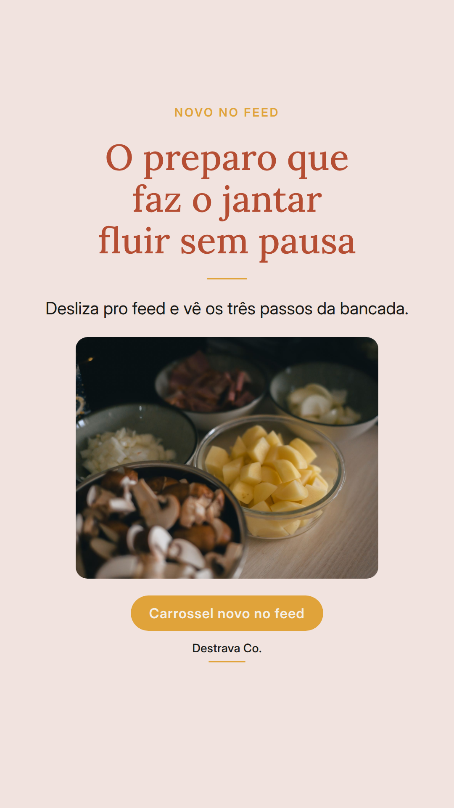
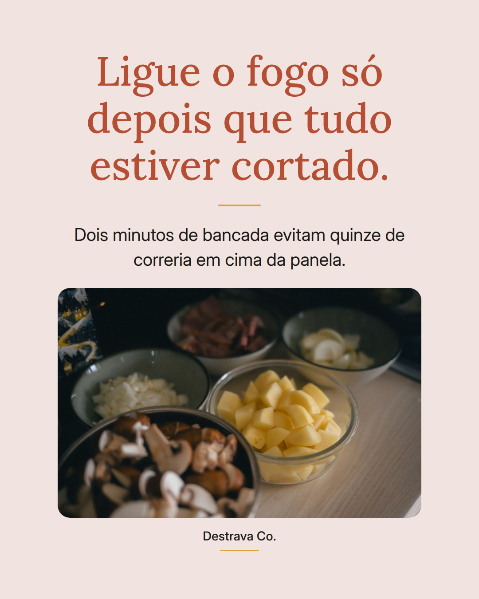
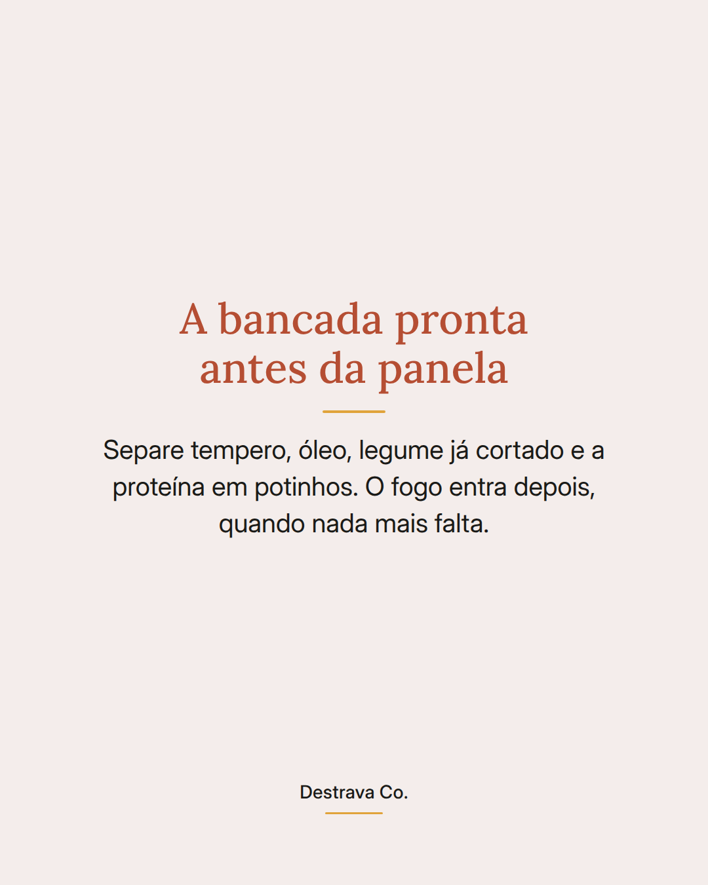
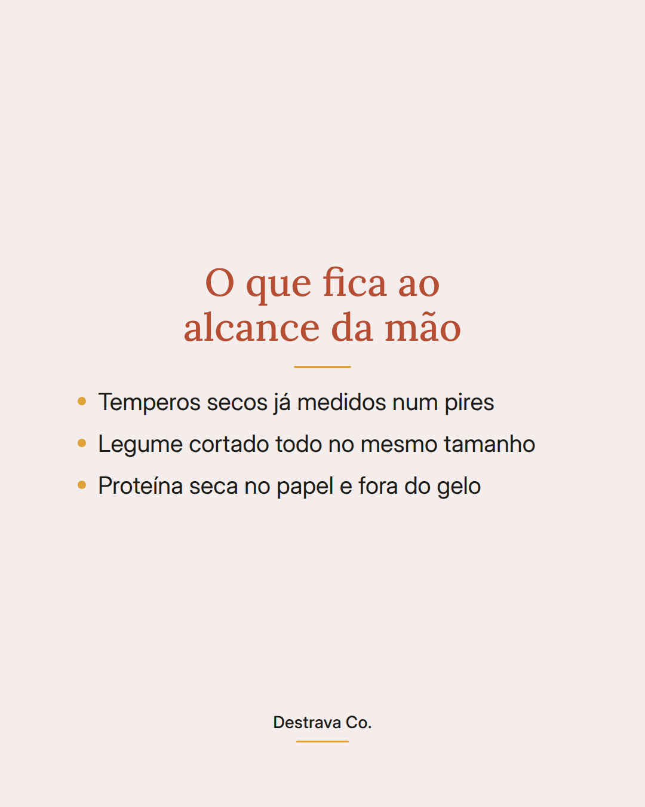
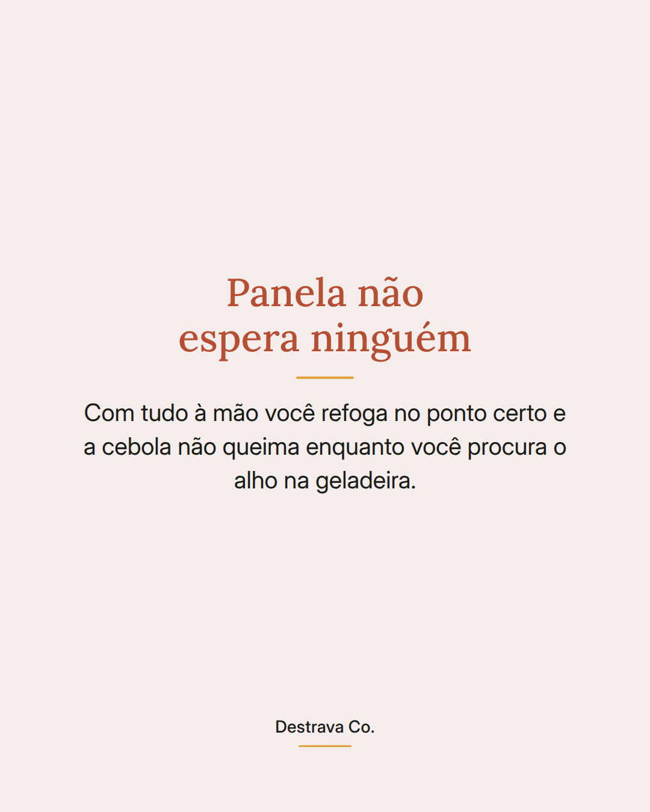

Jantar rápido começa antes de ligar o fogo.
Cortar, medir e deixar tudo na bancada transforma a panela numa sequência sem pausa, e é isso que encurta o preparo de verdade.
Quando o fogo acende com metade dos ingredientes ainda na geladeira, a cebola queima enquanto você procura o alho. O preparo feito antes some com essa correria.
Dois minutos de bancada resolvem: tempero medido num pires, legume cortado todo no mesmo tamanho, proteína seca no papel e um pote pras cascas.
Salva pra lembrar no próximo dia apertado e manda pra quem cozinha com pressa. No PDF gratuito tem 20 receitas de até 15 minutos com os passos já na ordem.